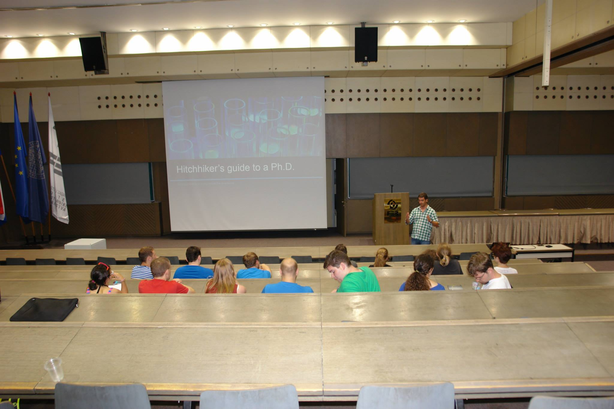
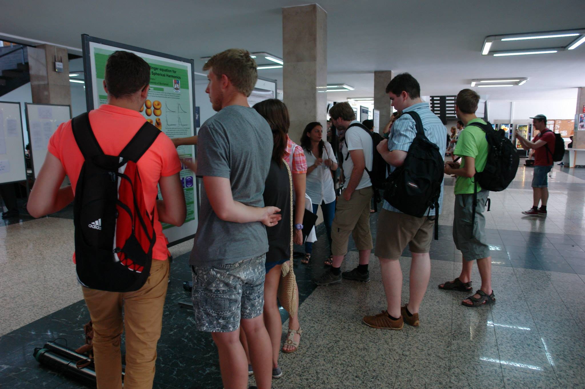
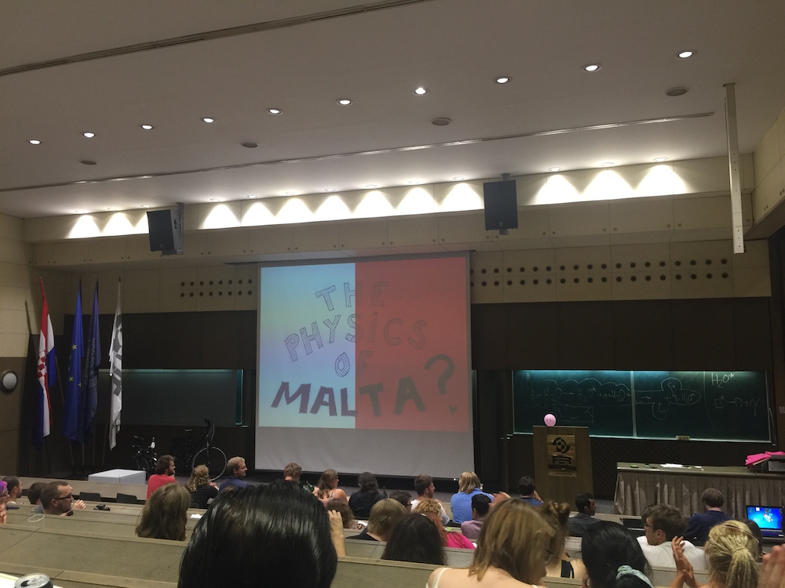

<!-- One -->
<section class="wrapper style1 container special">

    <!-- Content -->
    <div class="content">

        <div class="row">
            <div class="4u 12u(narrower)">
                <section>
                    <a class="image featured"></a>
                    <header>
                        <h3>Student lectures</h3>
                        <p>Lectures will have 15 minutes allocated for the presentation and 3 minutes allocated for any questions. The schedule can be found in the <a href="http://icps2016.com/programme/abstracts.pdf">abstract booklet</a>.</p>
                        <p>Abstracts can be found <a href="student-lectures.html">here</a></p>
                    </header>
                </section>
            </div>

            <div class="4u 12u(narrower)">
                <section>
                    <a class="image featured"></a>
                    <header>
                        <h3>Student posters</h3>
                        <p>The poster session will be held on August 15<sup>th</sup> at the University of Malta Student Commonroom.</p>
                        <p>Abstracts can be found <a href="student-posters.html">here</a></p>
                    </header>
                </section>
            </div>

            <div class="4u 12u(narrower)">
                <section>
                    <a class="image featured"></a>
                    <header>
                        <h3>Science Slam</h3>
                        <p>The science slam will be held on the night of August 13<sup>th</sup> at the University of Malta quadrangle.</p>
                        <p>Abstracts can be found <a href="student-slam.html">here</a></p>
                    </header>
                </section>
            </div>
        </div>

    </div>
</section>
